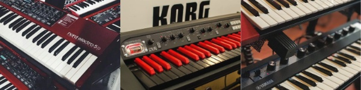

Nord Electro 5, Korg SV-1 88, Yamaha Reface YC
Our goal is not simply restoring these instruments but to enhance their sound quality, ensuring that each note resonates with the warmth and authenticity that made these keyboards legendary.